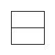
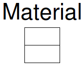
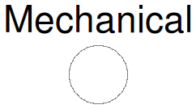
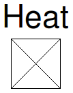

Table of Contents
- User's Guide
- BCs**
- Sensors**
- Assemblies**
- Regions**
- Subregions**
- Connectors
- Characteristics
- Units
- Quantities
- BaseClasses
- **Please check back soon or contact kdavies4 at gmail.com.
Download
- Latest: FCSys-2.0.zip (**Check back soon.)

Three types of physical connectors are used in FCSys. The chemical connectors (ChemicalBus, ChemicalBusInternal, ChemicalInput, and ChemicalOutput) represent advective exchange among species that react chemically within a subregion. The inert connectors (InertAmagat, InertDalton, Inert, and InertInternal) describe diffusive exchange among species within a subregion. The face connectors (FaceBus, FaceBusInternal, FaceX, FaceY, FaceZ, and FaceGeneric) describe advective and diffusive transport between instances of a single species in neighboring regions or subregions.
The effort/flow pairs of the connectors are listed in Table 1. The dimensions of the efforts and flows are noted in terms of mass (M), amount or particle number (N), length (L), and time (T). The pairs are used to describe the transfer of material, linear momentum, and energy associated with material, mechanical, and thermal interactions. Both advection (e.g., dynamic force and thermal convection) and diffusion (e.g., friction and thermal conduction) are resolved (see the Species model).
| Within icon(s) | Name or quantity | Effort | Flow |
|---|---|---|---|


 |
Material exchange | Electrochemical potential divided by temperature μ/T [1] |
Current Ṅ [N T-1] |


 |
Mechanical exchange | Velocity φ [L T-1] |
Force mΦdot [L M T-2] |
|
|
Enthalpy | Massic enthalpy h̄ [L2 M N-1 T-2] |
Enthalpy flow rate Ḣ [L2 M T-3] |


 |
Material transport | Pressure p [M L-1 T-2] |
Current Ṅ [N T-1] |

|
Mechanical transport | Shear stress τ [M L-1 T-2] |
Surface area times shear velocity AṖ [L3 T-1] |

|
Heat | Temperature T [L2 M N-1 T-2] |
Heat flow rate Q̇ [L2 M T-3] |
|
|
Additivity of volume (Amagat's law) |
Pressure p [M L-1 T-2] |
Volume V [L3] |
|
|
Additivity of pressure (Dalton's law) |
Volume V [L3] |
Pressure p [M L-1 T-2] |
In addition to the material exchange pair, the chemical connectors have mechanical exchange and enthalpy pairs that are used to describe the purely advective (non-diffusive) flow associated with the material exchange (see the Reaction model for details). Although the physical variables are acausal, the ChemicalInput and ChemicalOutput connectors have inputs and outputs to pass characteristic data of the species—the chemical formula and specific mass. This information is used to determine the appropriate stoichiometric and advective equations in the Reaction model.
There are two specialized types of inert connectors. The InertAmagat connector (with an "A" in the icon) imposes additivity of volume and is used to combine material phases within a subregion. The InertDalton connector (with a "D" in the icon) applies additivity of pressure to mix species within a material phase (e.g., N2 and O2 within a gas). The two cannot be directly connected because the effort/flow designations are opposite. An adapter must be used (e.g., FCSys.Subregions.PhaseBoundary).
The face connectors contain Material,
Mechanical, and
Heat subconnectors.
FaceX,
FaceY,
FaceZ, and
FaceGeneric
differ only in the name of the mechanical subconnectors, which describe transverse displacement.
For example, FaceX has
Mechanical subconnectors named
mechanicalY and mechanicalZ.
The effort-flow products of the mechanical exchange and transport pairs are the rates of energy associated with the interactions. However, many of the pairs are different. The effort of the material exchange pair is electrochemical potential divided by temperature because it is used in the chemical equilibrium (see the Reaction model). The enthalpy pair's effort is massic enthalpy (enthalpy divided by mass) since it is used for advection only. The effort of the material transport pair is pressure rather than electrochemical potential so that the dynamic normal force can be resolved without nonlinear systems of equations (see the Species model). The flow variable of the heat pair is heat flow rate instead of entropy flow rate so that the transport equations are linear and follow the traditional form (e.g., Fourier's law; see Modelica.Thermal.HeatTransfer). The additivity of volume and pressure pairs describe static balances; therefore, their flows are the quantities rather than the rates of the quantities.
Figure 1 shows the instantiation hierarchy of the connectors.
ChemicalBus
is an expandable connector that groups
ChemicalInput and
ChemicalOutput connectors
of multiple species. Likewise,
FaceBus groups
FaceX, FaceY,
FaceZ, or FaceGeneric
connectors of multiple species.
The
ChemicalBusInternal and
FaceBusInternal connectors (not shown)
are versions of
ChemicalBus and
FaceBus
that merely have a default protected prefix and smaller icons to
indicate that the connectors are internal to a model. The inert connectors are
flat; they do not have subconnectors.

Figure 1: Instantiation hierarchy of the connectors.
Relation to thermodynamics and justification of the Amagat and Dalton connectors:
In order to describe the dynamic behavior of a physical system, a model must include conservation laws or rate balances. These equations involve the storage and flow of extensive quantities within (among species) and into the system. In chemical/thermal systems, the extensive quantities of interest are particle number (or mass) and entropy or energy. For the sake of simplicity, momentum will be excluded from the present discussion; assume that the fluid is macroscopically stagnant. Also assume that there is only one inlet or outlet to the system. In terms of mathematics, we have introduced four variables (2 flows and 2 quantities) but only two equations (material and energy conservation).
Two additional equations involve flow rates; these are transport equations with spatial nature—separate from the temporal conservation equations. An extensive body of empirical evidence indicates that the the flows are related to differences in efforts or generalized "driving forces." The most appropriate efforts are conjugate to the quantities with respect to energy or entropy. For the chemical/thermal system, the efforts are then electrochemical potential and temperature. Yet these are intensive properties—distinct from the quantities, which are extensive. So far, there are two rate balances to relate extensive quantities to flows and two transport equations (4 equations in all) and six variables (2 quantities, 2 flows, and 2 efforts or intensive properties).
One extensive quantity can be divided by the other to yield an intensive property. For example, internal energy can be divided by particle number to give internal potential (the relationship is not as direct for electrochemical potential, but the concept still holds). The other equation involves the spatial extent of the system, for example, the extensive volume of the system divided by particle number to give specific volume. This introduces another variable (extensive volume); now there are six equations and seven variables.
Fortunately, we may assume that the extensive volume of the system is fixed (i.e., that the system is a "control volume"). If there is only one species in the system, we assume that it fills the entire volume (e.g., no macroscopically observable regions of vacuum). If another species is included in the system, the number of variables is doubled. All of the equations may be repeated except that the specific volume of each species is its own extensive volume or "partial volume" divided by its particle number to give "partial specific volume." It is reasonable to assume that the sum of the partial volumes is equal to the total volume of the system (again, no voids). This is a generalization of the previous equation that set the volume of the single species equal to the volume of the system or control volume. However, now there are three volumes (of each species and of the system) instead of two (of the one species and of the system) but no additional equations.
In general, an additional equation may be added to exchange volume between the two species such that they reach equilibrium. This could be modeled by another transport-like equation, with a slight modification. However, in the FCSys package, it is assumed that this equilibrium already/always exists. Since we wish to impose that the sum of the two partial volumes is equal to the total volume, it is appropriate to set the flow variable to be the quantity itself (volume) rather than the rate of the quantity. Then, there is no need for another rate balance to relate the quantity to the flow; the quantity is the flow. In this case, the most appropriate effort variable is pressure (or ideal density). The relationship among pressure, specific volume, and temperature is given by an equation of state. This "additivity of volume" interaction occurs through the InertAmagat connector.
If the species are mixed, it may be more appropriate to assume that the pressures of the components of a mixture sum to the total pressure of the mixture. This "additivity of pressure" is described by connections of the InertDalton connector (instead of instead of InertAmagat).
Licensed by the Georgia Tech Research Corporation under the Modelica License 2
Copyright 2007–2012, Georgia Tech Research Corporation.
This Modelica package is free software and the use is completely at your own risk; it can be redistributed and/or modified under the terms of the Modelica License 2. For license conditions (including the disclaimer of warranty) see FCSys.UsersGuide.ModelicaLicense2 or visit http://www.modelica.org/licenses/ModelicaLicense2.
Extends from Modelica.Icons.InterfacesPackage (Icon for packages containing interfaces).
| Name | Description |
|---|---|
| Bus of ChemicalInput and ChemicalOutput connectors (for multiple species) | |
| Internal bus of ChemicalInput and ChemicalOutput connectors (for multiple species) | |
| Connector to exchange material while advecting linear momentum and enthalpy, with characteristic data as input | |
| Connector to exchange material while advecting linear momentum and enthalpy, with characteristic data as output | |
| Bus of FaceX, FaceY, FaceZ, or FaceGeneric connectors (for multiple species) | |
| Internal bus of FaceX, FaceY, FaceZ, or FaceGeneric connectors (for multiple species) | |
| Connector to transport material, displacement, and heat of a single species along a generic axis | |
| X-axis connector to transport material, displacement, and heat of a single species | |
| Y-axis connector to transport material, displacement, and heat of a single species | |
| Z-axis connector to transport material, displacement, and heat of a single species | |
| Connector to exchange linear momentum and heat by diffusion | |
| Inert connector with additivity of volume | |
| Inert connector with additivity of pressure | |
| Internal connector to exchange linear momentum and heat by diffusion | |
| Connector for material transport | |
| Mechanical | Connector for transverse displacement |
| Connector to transport heat | |
"input Real" as a connector | |
Internal "input Real" as a connector | |
| Bus of RealInput connectors | |
| Internal bus of RealInput connectors | |
"output Real" as a connector | |
Internal "output Real" as a connector | |
| Bus of RealOutput connectors | |
| Internal bus of RealOutput connectors | |
| Base classes (not for direct use) |
FCSys.Connectors.ChemicalBus

There is no minimal set of variables. Species are included by connecting instances of a Chemical connector (ChemicalInput or ChemicalOutput).
expandable connector ChemicalBus "Bus of ChemicalInput and ChemicalOutput connectors (for multiple species)"end ChemicalBus;
FCSys.Connectors.ChemicalBusInternal

This is copy of the ChemicalBus connector, except that it
has a smaller icon and a default protected prefix. For more information, see that connector.
expandable connector ChemicalBusInternal "Internal bus of ChemicalInput and ChemicalOutput connectors (for multiple species)"end ChemicalBusInternal;
FCSys.Connectors.ChemicalInput

For more information, see the documentation in the Connectors package.
Extends from FCSys.Connectors.BaseClasses.PartialChemical (Partial connector to exchange material while advecting linear momentum and enthalpy).
| Type | Name | Default | Description |
|---|---|---|---|
| Integer | n_vel | 1 | Number of components of velocity (nvel) |
| Type | Name | Description |
|---|---|---|
| Integer | n_vel | Number of components of velocity (nvel) |
| Number | muPerT | Quotient of electrochemical potential and temperature [1] |
| flow Current | Ndot | Current [N/T] |
| Velocity | phi[n_vel] | Velocity [l/T] |
| flow Force | mPhidot[n_vel] | Force due to advection [l.m/T2] |
| Velocity2 | hbar | Massic enthalpy [l2/T2] |
| flow Power | Hdot | Enthalpy flow rate [l2.m/T3] |
| input MassSpecific | m | Specific mass [m/N] |
| input String | formula | Chemical formula |
connector ChemicalInput "Connector to exchange material while advecting linear momentum and enthalpy, with characteristic data as input" extends FCSys.Connectors.BaseClasses.PartialChemical; input Q.MassSpecific m "Specific mass"; input String formula(start="") "Chemical formula"; // Note: The start value prevents a warning when checked in Dymola 7.4.end ChemicalInput;
FCSys.Connectors.ChemicalOutput

For more information, see the documentation in the Connectors package.
Extends from FCSys.Connectors.BaseClasses.PartialChemical (Partial connector to exchange material while advecting linear momentum and enthalpy).
| Type | Name | Default | Description |
|---|---|---|---|
| Integer | n_vel | 1 | Number of components of velocity (nvel) |
| Type | Name | Description |
|---|---|---|
| Integer | n_vel | Number of components of velocity (nvel) |
| Number | muPerT | Quotient of electrochemical potential and temperature [1] |
| flow Current | Ndot | Current [N/T] |
| Velocity | phi[n_vel] | Velocity [l/T] |
| flow Force | mPhidot[n_vel] | Force due to advection [l.m/T2] |
| Velocity2 | hbar | Massic enthalpy [l2/T2] |
| flow Power | Hdot | Enthalpy flow rate [l2.m/T3] |
| output MassSpecific | m | Specific mass [m/N] |
| output String | formula | Chemical formula |
connector ChemicalOutput "Connector to exchange material while advecting linear momentum and enthalpy, with characteristic data as output" extends FCSys.Connectors.BaseClasses.PartialChemical; output Q.MassSpecific m "Specific mass"; output String formula "Chemical formula";end ChemicalOutput;
FCSys.Connectors.FaceBus

There is no minimal set of variables. Species are included by connecting instances of a Face connector (FaceX, FaceY, FaceZ, or FaceGeneric). In order to allow the subconnectors of the Face connectors (instances of Material, Mechanical, and Heat) to be included independently, those subconnectors are connected explicitly. For example,
connect(species.xNegative.material, xNegative.species.material);
connect(species.xNegative.mechanicalY, xNegative.species.mechanicalY);
connect(species.xNegative.mechanicalZ, xNegative.species.mechanicalZ);
connect(species.xNegative.heat, xNegative.species.heat);
where species is an instance of a Species
model in which xNegative is a FaceX connector.
Meanwhile, xNegative (not species.xNegative) is an instance of this
connector (FaceBus).
expandable connector FaceBus "Bus of FaceX, FaceY, FaceZ, or FaceGeneric connectors (for multiple species)"end FaceBus;
FCSys.Connectors.FaceBusInternal

This is copy of the FaceBus connector, except that it
has a smaller icon and a default protected prefix. For more information, see that connector.
expandable connector FaceBusInternal "Internal bus of FaceX, FaceY, FaceZ, or FaceGeneric connectors (for multiple species)"end FaceBusInternal;
FCSys.Connectors.FaceGeneric

To specify zero shear stress at the boundary, set the
corresponding inviscid1 or inviscid2 parameter to true.
As defined by the Orientation enumeration, the first transverse axis is the axis following the normal axis in the Cartesian coordinate system. The second transverse axis is the axis preceding the normal axis (or following it twice).
For more information, see the documentation in the Connectors package and the PartialFace connector.
Extends from BaseClasses.PartialFace (Partial connector to transport material, transverse displacement, and entropy of a single species).
| Type | Name | Default | Description |
|---|---|---|---|
| Boundary conditions (will remove subconnectors) | |||
| Boolean | isobaric | false | Isobaric |
| Boolean | adiabatic | false | Adiabatic |
| Boolean | inviscid1 | false | Inviscid along the 1st transverse axis |
| Boolean | inviscid2 | false | Inviscid along the 2nd transverse axis |
| Type | Name | Description |
|---|---|---|
| Material | material | Subconnector for material transport |
| Heat | heat | Subconnector for thermal transport |
| Mechanical | mechanical1 | Subconnector for 1st transverse displacement |
| Mechanical | mechanical2 | Subconnector for 2nd transverse displacement |
| Boundary conditions (will remove subconnectors) | ||
| Boolean | isobaric | Isobaric |
| Boolean | adiabatic | Adiabatic |
| Boolean | inviscid1 | Inviscid along the 1st transverse axis |
| Boolean | inviscid2 | Inviscid along the 2nd transverse axis |
connector FaceGeneric "Connector to transport material, displacement, and heat of a single species along a generic axis" extends BaseClasses.PartialFace; parameter Boolean inviscid1=false "Inviscid along the 1st transverse axis"; parameter Boolean inviscid2=false "Inviscid along the 2nd transverse axis"; Mechanical mechanical1 if not inviscid1 "Subconnector for 1st transverse displacement"; Mechanical mechanical2 if not inviscid2 "Subconnector for 2nd transverse displacement";end FaceGeneric;
FCSys.Connectors.FaceX
To specify zero shear stress at the boundary, set the
corresponding inviscidY or inviscidZ parameter to true.
For more information, see the documentation in the Connectors package and the PartialFace connector.
Extends from BaseClasses.PartialFace (Partial connector to transport material, transverse displacement, and entropy of a single species).
| Type | Name | Default | Description |
|---|---|---|---|
| Boundary conditions (will remove subconnectors) | |||
| Boolean | isobaric | false | Isobaric |
| Boolean | adiabatic | false | Adiabatic |
| Boolean | inviscidY | false | Inviscid along the y axis |
| Boolean | inviscidZ | false | Inviscid along the z axis |
| Type | Name | Description |
|---|---|---|
| Material | material | Subconnector for material transport |
| Heat | heat | Subconnector for thermal transport |
| Mechanical | mechanicalY | Subconnector for Y-axis displacement |
| Mechanical | mechanicalZ | Subconnector for Z-axis displacement |
| Boundary conditions (will remove subconnectors) | ||
| Boolean | isobaric | Isobaric |
| Boolean | adiabatic | Adiabatic |
| Boolean | inviscidY | Inviscid along the y axis |
| Boolean | inviscidZ | Inviscid along the z axis |
connector FaceX "X-axis connector to transport material, displacement, and heat of a single species" extends BaseClasses.PartialFace; parameter Boolean inviscidY=false "Inviscid along the y axis"; parameter Boolean inviscidZ=false "Inviscid along the z axis"; Mechanical mechanicalY if not inviscidY "Subconnector for Y-axis displacement"; Mechanical mechanicalZ if not inviscidZ "Subconnector for Z-axis displacement";end FaceX;
FCSys.Connectors.FaceY
To specify zero shear stress at the boundary, set the
corresponding inviscidZ or inviscidX parameter to true.
For more information, see the documentation in the Connectors package and the PartialFace connector.
Extends from BaseClasses.PartialFace (Partial connector to transport material, transverse displacement, and entropy of a single species).
| Type | Name | Default | Description |
|---|---|---|---|
| Boundary conditions (will remove subconnectors) | |||
| Boolean | isobaric | false | Isobaric |
| Boolean | adiabatic | false | Adiabatic |
| Boolean | inviscidZ | false | Inviscid along the z axis |
| Boolean | inviscidX | false | Inviscid along the x axis |
| Type | Name | Description |
|---|---|---|
| Material | material | Subconnector for material transport |
| Heat | heat | Subconnector for thermal transport |
| Mechanical | mechanicalZ | Subconnector for Z-axis displacement |
| Mechanical | mechanicalX | Subconnector for X-axis displacement |
| Boundary conditions (will remove subconnectors) | ||
| Boolean | isobaric | Isobaric |
| Boolean | adiabatic | Adiabatic |
| Boolean | inviscidZ | Inviscid along the z axis |
| Boolean | inviscidX | Inviscid along the x axis |
connector FaceY "Y-axis connector to transport material, displacement, and heat of a single species" extends BaseClasses.PartialFace; parameter Boolean inviscidZ=false "Inviscid along the z axis"; parameter Boolean inviscidX=false "Inviscid along the x axis"; Mechanical mechanicalZ if not inviscidZ "Subconnector for Z-axis displacement"; Mechanical mechanicalX if not inviscidX "Subconnector for X-axis displacement";end FaceY;
FCSys.Connectors.FaceZ
To specify zero shear stress at the boundary, set the
corresponding inviscidX or inviscidY parameter to true.
For more information, see the documentation in the Connectors package and the PartialFace connector.
Extends from BaseClasses.PartialFace (Partial connector to transport material, transverse displacement, and entropy of a single species).
| Type | Name | Default | Description |
|---|---|---|---|
| Boundary conditions (will remove subconnectors) | |||
| Boolean | isobaric | false | Isobaric |
| Boolean | adiabatic | false | Adiabatic |
| Boolean | inviscidX | false | Inviscid along the x axis |
| Boolean | inviscidY | false | Inviscid along the y axis |
| Type | Name | Description |
|---|---|---|
| Material | material | Subconnector for material transport |
| Heat | heat | Subconnector for thermal transport |
| Mechanical | mechanicalX | Subconnector for X-axis displacement |
| Mechanical | mechanicalY | Subconnector for Y-axis displacement |
| Boundary conditions (will remove subconnectors) | ||
| Boolean | isobaric | Isobaric |
| Boolean | adiabatic | Adiabatic |
| Boolean | inviscidX | Inviscid along the x axis |
| Boolean | inviscidY | Inviscid along the y axis |
connector FaceZ "Z-axis connector to transport material, displacement, and heat of a single species" extends BaseClasses.PartialFace; parameter Boolean inviscidX=false "Inviscid along the x axis"; parameter Boolean inviscidY=false "Inviscid along the y axis"; Mechanical mechanicalX if not inviscidX "Subconnector for X-axis displacement"; Mechanical mechanicalY if not inviscidY "Subconnector for Y-axis displacement";end FaceZ;
FCSys.Connectors.Inert

Note that the geometric orientation is globally referenced. For example, force is positive in the positive-x direction—not from the interface into component as is pressure. Thus, force is the rate of globally-referenced linear momentum into the component.
For more information, see the documentation in the Connectors package.
| Type | Name | Default | Description |
|---|---|---|---|
| Integer | n_vel | 0 | Number of components of velocity (nvel) |
| Type | Name | Description |
|---|---|---|
| Integer | n_vel | Number of components of velocity (nvel) |
| Velocity | phi[n_vel] | Velocity [l/T] |
| flow Force | mPhidot[n_vel] | Force [l.m/T2] |
| TemperatureAbsolute | T | Temperature |
| flow Power | Qdot | Heat flow rate [l2.m/T3] |
connector Inert
"Connector to exchange linear momentum and heat by diffusion"
parameter Integer n_vel(
final min=0,
final max=3) = 0
"Number of components of velocity (nvel)";
// Linear momentum
Q.Velocity phi[n_vel](each nominal=1*U.cm/U.s) "Velocity";
flow Q.Force mPhidot[n_vel](each nominal=1*U.N) "Force";
// Heat
Q.TemperatureAbsolute T(nominal=298.15*U.K) "Temperature";
flow Q.Power Qdot(nominal=1*U.W) "Heat flow rate";
end Inert;
FCSys.Connectors.InertAmagat

The concept of "additivity of volume" is defined by Amagat's law or the Law of Partial Volumes, which states that the partial extensive volumes of the components of a mixture sum to the total extensive volume of the mixture [Bejan2006, p. 194]. The specific or molar volumes of the species are each evaluated at the temperature and the total pressure of the mixture.
This concept loses its physical meaning once the species are mixed [Woo1995]. If the species are completely mixed, then it is impossible to distinguish their particles and thus determine their partial volumes. Therefore, the concept is only used to allow distinct phases to exist within the same subregion—not to species within a phase. If a system contains only a solid phase and a gas phase, it is assumed that the partial volumes of the mixtures are additive and the mixtures exist at the same pressure. Within a phase, the species are mixed according to Dalton's law (see the InertDalton connector).
In order to implement Amagat's law, this connector includes volume (not rate of volume) as a flow variable. The effort variable is pressure such that the effort and flow variables are conjugates of energy (not power).
See also the Inert and InertDalton connectors and the documentation in the Connectors package.
Extends from FCSys.Connectors.Inert (Connector to exchange linear momentum and heat by diffusion).
| Type | Name | Default | Description |
|---|---|---|---|
| Integer | n_vel | 0 | Number of components of velocity (nvel) |
| Type | Name | Description |
|---|---|---|
| Integer | n_vel | Number of components of velocity (nvel) |
| Velocity | phi[n_vel] | Velocity [l/T] |
| flow Force | mPhidot[n_vel] | Force [l.m/T2] |
| TemperatureAbsolute | T | Temperature |
| flow Power | Qdot | Heat flow rate [l2.m/T3] |
| PressureAbsolute | p | Pressure [m/(l.T2)] |
| flow Volume | V | Volume [l3] |
connector InertAmagat "Inert connector with additivity of volume" extends FCSys.Connectors.Inert; // Additivity of volume Q.PressureAbsolute p(nominal=1*U.atm) "Pressure"; flow Q.Volume V(min=-Modelica.Constants.inf, nominal=1*U.cm^3) "Volume";end InertAmagat;
FCSys.Connectors.InertDalton

The concept of "additivity of pressure" is defined by Dalton's law or the Law of Partial Pressures, which states that the partial pressures of the components of a mixture sum to the total pressure of the mixture [Bejan2006, p. 192]. The partial pressures of the species are evaluated at the temperature and the total volume of the mixture.
In order to implement Dalton's law, this connector includes pressure as a flow variable. The effort variable is volume such that the effort and flow variables are conjugates of energy (not power).
See also the InertAmagat and Inert connectors and the documentation in the Connectors package.
Extends from FCSys.Connectors.Inert (Connector to exchange linear momentum and heat by diffusion).
| Type | Name | Default | Description |
|---|---|---|---|
| Integer | n_vel | 0 | Number of components of velocity (nvel) |
| Type | Name | Description |
|---|---|---|
| Integer | n_vel | Number of components of velocity (nvel) |
| Velocity | phi[n_vel] | Velocity [l/T] |
| flow Force | mPhidot[n_vel] | Force [l.m/T2] |
| TemperatureAbsolute | T | Temperature |
| flow Power | Qdot | Heat flow rate [l2.m/T3] |
| Volume | V | Volume [l3] |
| flow Pressure | p | Pressure [m/(l.T2)] |
connector InertDalton "Inert connector with additivity of pressure" extends FCSys.Connectors.Inert; // Additivity of pressure Q.Volume V(nominal=1*U.cm^3) "Volume"; flow Q.Pressure p(nominal=1*U.atm) "Pressure";end InertDalton;
 FCSys.Connectors.InertInternal
FCSys.Connectors.InertInternal

This is copy of the Inert connector, except that it
has a smaller icon and a default protected prefix. For more information, see that connector.
| Type | Name | Default | Description |
|---|---|---|---|
| Integer | n_vel | 0 | Number of components of velocity (nvel) |
| Type | Name | Description |
|---|---|---|
| Integer | n_vel | Number of components of velocity (nvel) |
| Velocity | phi[n_vel] | Velocity [l/T] |
| flow Force | mPhidot[n_vel] | Force [l.m/T2] |
| TemperatureAbsolute | T | Temperature |
| flow Power | Qdot | Heat flow rate [l2.m/T3] |
connector InertInternal
"Internal connector to exchange linear momentum and heat by diffusion"
parameter Integer n_vel(
final min=0,
final max=3) = 0
"Number of components of velocity (nvel)";
// Linear momentum
Q.Velocity phi[n_vel](each nominal=1*U.cm/U.s) "Velocity";
flow Q.Force mPhidot[n_vel](each nominal=1*U.N) "Force";
// Heat
Q.TemperatureAbsolute T(nominal=298.15*U.K) "Temperature";
flow Q.Power Qdot(nominal=1*U.W) "Heat flow rate";
end InertInternal;

For more information, see the documentation in the Connectors package.
| Type | Name | Description |
|---|---|---|
| PressureAbsolute | p | Pressure [m/(l.T2)] |
| flow Current | Ndot | Current [N/T] |
connector Material "Connector for material transport" Q.PressureAbsolute p(nominal=1*U.Pa) "Pressure"; flow Q.Current Ndot(nominal=1*U.A) "Current";end Material;
FCSys.Connectors.Mechanical
Note that the geometric orientations of shear stress and velocity are referenced locally. As defined by inSign(), force and velocity in the positive direction on the negative side or face of a region or subregion is in the globally-referenced positive direction. The positive direction on the positive side is globally negative.
For more information, see the documentation in the Connectors package.
| Type | Name | Description |
|---|---|---|
| Pressure | tau | Shear stress [m/(l.T2)] |
| flow VolumeRate | APdot | Shear velocity times surface area [l3/T] |
connector Mechanical "Connector for transverse displacement" Q.Pressure tau(nominal=1*U.Pa) "Shear stress"; flow Q.VolumeRate APdot(nominal=1*U.cm^3/U.s) "Shear velocity times surface area";end Mechanical;
FCSys.Connectors.Heat
| Type | Name | Description |
|---|---|---|
| TemperatureAbsolute | T | Temperature |
| flow Power | Qdot | Heat flow rate [l2.m/T3] |
connector Heat "Connector to transport heat" Q.TemperatureAbsolute T(nominal=298.15*U.K) "Temperature"; flow Q.Power Qdot(nominal=1*U.W) "Heat flow rate";end Heat;
 FCSys.Connectors.RealInput
FCSys.Connectors.RealInputinput Real" as a connector

Connector with one input signal of type Real.
Extends from Real.
connector RealInput = input Real
""input Real" as a connector";
FCSys.Connectors.RealInputInternalinput Real" as a connector

Protected connector with one input signal of type Real.
Extends from Real.
connector RealInputInternal = input Real
"Internal "input Real" as a connector";
 FCSys.Connectors.RealInputBus
FCSys.Connectors.RealInputBus

There is no minimal set of variables. Signals are included by connecting instances of the RealInput connector.
expandable connector RealInputBus "Bus of RealInput connectors"end RealInputBus;
FCSys.Connectors.RealInputBusInternal

There is no minimal set of variables. Signals are included by connecting instances of the RealInput connector.
expandable connector RealInputBusInternal "Internal bus of RealInput connectors"end RealInputBusInternal;
 FCSys.Connectors.RealOutput
FCSys.Connectors.RealOutputoutput Real" as a connector

Connector with one output signal of type Real.
Extends from Real.
connector RealOutput = output Real
""output Real" as a connector";
FCSys.Connectors.RealOutputInternaloutput Real" as a connector

Protected connector with one output signal of type Real.
Extends from Real.
connector RealOutputInternal = output Real
"Internal "output Real" as a connector";
 FCSys.Connectors.RealOutputBus
FCSys.Connectors.RealOutputBus

There is no minimal set of variables. Signals are included by connecting instances of the RealOutput connector.
expandable connector RealOutputBus "Bus of RealOutput connectors"end RealOutputBus;
FCSys.Connectors.RealOutputBusInternal

There is no minimal set of variables. Signals are included by connecting instances of the RealOutput connector.
expandable connector RealOutputBusInternal "Internal bus of RealOutput connectors"end RealOutputBusInternal;